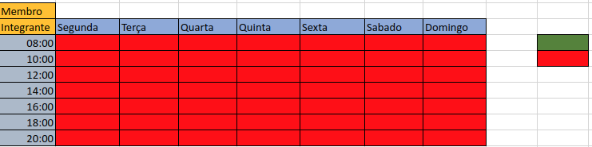
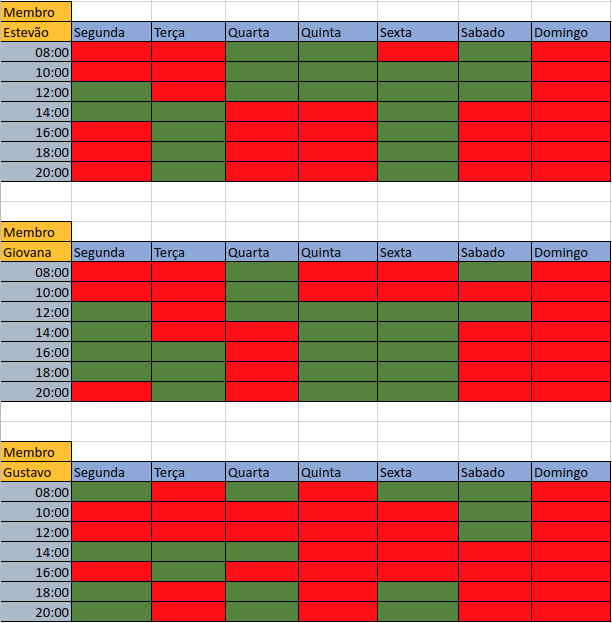
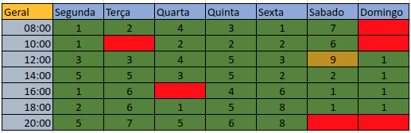

Disponibilidade de horários
Histórico de versão
| Data | Versão | Descrição | Autor(es) |
|---|---|---|---|
| 30/07/2021 | 1.0 | Criação do documento | Bruno Nunes |
O que é?
Foi feito no excel uma planilha para verificar a disponibilidades dos integrantes do grupo. Para ter uma opção melhor de marcar os dias dos encontros.
Como funciona?
Cada membro do grupo é apresentado um quadro de horários, onde estão preenchidos com a cor vermelha. A disponibilidade de um integrante é feita com a mudança de cor de vermelho para verde.

Depois do preenchimento, é somado a disponibilidade de todos os integrantes a um só quadro horário, e a partir dele é verificado a maior disponibilidade do time.

Resultados
Depois de verificado, temos então que o maior número de disponibilidade é com a cor dourada, mas também não é removida a ideia de fazer reuniões em horários com o maior número de presentes.
